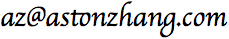

|
Aston Zhang  |
Aston Zhang is a senior scientist at Amazon Web Services (AWS). His current research interests focus on efficient and trustworthy methods for machine learning and natural language processing. He received the ICLR Outstanding Paper Award (2021), the ACM Ubicomp Distinguished Paper Award (2018), and the ACM SenSys Best Paper Award Nomination (2017). His open-source textbook, Dive into Deep Learning, has been adopted worldwide. He obtained his Ph.D. in Computer Science from University of Illinois at Urbana-Champaign.
[GitHub] [LinkedIn] [Twitter]Feel free to connect and discuss ideas. My team at AWS AI is hiring scientists in machine learning. We are based in the San Francisco bay area and have global offices. Drop me a line if interested.
Books
- A. Zhang, Z. C. Lipton, M. Li, and A. J. Smola
Dive into Deep Learning- Adopted at 300 universities from 55 countries
- Featured in the AWS re:Invent 2021 keynote by Dr. Swami Sivasubramanian
- A. Zhang, M. Li, Z. C. Lipton, and A. J. Smola
动手学深度学习 (in Chinese) - Best seller of new books in "Computers and Internet" at the largest Chinese online bookstore (week of 7/15/19)
Tutorials
with A. J. Smola
Attention in Deep Learning [Keynote] [PDF] [Video]
In The 36th International Conference on Machine Learning (ICML), 2019with H. Lin, X. Shi, L. Lausen, H. He, S. Zha, and A. J. Smola
Dive into Deep Learning for Natural Language Processing
In Conference on Empirical Methods in Natural Language Processing (EMNLP), 2019with H. Lin, L. Lausen, S. Zha, A. J. Smola, C. Wang, and M. Li
From Shallow to Deep Language Representations: Pre-training, Fine-tuning, and Beyond [Website]
In The 25th ACM SIGKDD Conference on Knowledge Discovery and Data Mining (KDD), 2019with H. Zhang, T. He, Z. Zhang, Z. Zhang, H. Lin, and M. Li
Everything You Need to Know to Reproduce SOTA Deep Learning Models from Hands-on Tutorial [Website]
In International Conference on Computer Vision (ICCV), 2019
Papers
A. Zhang, Y. Tay, S. Zhang, A. Chan, A. T. Luu, S. C. Hui, and J. Fu
Beyond Fully-Connected Layers with Quaternions: Parameterization of Hypercomplex Multiplications with 1/n Parameters
In Proceedings of the International Conference on Learning Representations (ICLR, Outstanding Paper Award), 2021A. Chan, Y. S. Ong, B. Pung, A. Zhang, and J. Fu
CoCon: A Self-Supervised Approach for Controlled Text Generation
In Proceedings of the International Conference on Learning Representations (ICLR), 2021A. Zhang, Y. Tay, Y. Shen, A. Chan, and S. Zhang
Self-Instantiated Recurrent Units with Dynamic Soft Recursion
In Proceedings of the Conference on Neural Information Processing Systems (NeurIPS), 2021Y. Long, B. Wang, Z. Yang, B. Kailkhura, A. Zhang, C. A. Gunter, and B. Li
G-PATE: Scalable Differentially Private Data Generator via Private Aggregation of Teacher Discriminators
In Proceedings of the Conference on Neural Information Processing Systems (NeurIPS), 2021T. Chen, Y. Sui, X. Chen, A. Zhang, and Z. Wang
A Unified Lottery Ticket Hypothesis for Graph Neural Networks
In Proceedings of International Conference on Machine Learning (ICML), 2021H. Shao, Z. Xiao, S. Yao, D. Sun, A. Zhang, S. Liu, T. Wang, J. Li, and T. Abdelzaher
ControlVAE: Tuning, Analytical Properties, and Performance Analysis
In Transactions on Pattern Analysis and Machine Intelligence (TPAMI), 2021A. Zhang, A. Chan, Y. Tay, J. Fu, S. Wang, S. Zhang, H. Shao, S. Yao, and R. Lee
On Orthogonality Constraints for Transformers
In Proceedings of the 59th Annual Meeting of the Association for Computational Linguistics (ACL, Oral), 2021H. Shao, J. Wang, H. Lin, X. Zhang, A. Zhang, H. Ji, and T. Abdelzaher
Controllable and Diverse Text Generation in E-commerce
In Proceedings of the Web Conference (WWW), 2021S. Zhang, H. Liu, A. Zhang, Y. Hu, C. Zhang, Y. Li, T. Zhu, S. He, and W. Ou
Learning User Representations with Hypercuboids for Recommender Systems
In Proceedings of the 14th International Conference on Web Search and Data Mining (WSDM), 2021H. Shao, S. Yao, D. Sun, A. Zhang, S. Liu, D. Liu, J. Wang, and T. Abdelzaher
ControlVAE: Controllable Variational Autoencoder
In Proceedings of International Conference on Machine Learning (ICML), 2020J. Guo, H. He, T. He, L. Lausen, M. Li, H. Lin, X. Shi, C. Wang, J. Xie, S. Zha, A. Zhang, H. Zhang, Z. Zhang, Z. Zhang, S. Zheng, and Y. Zhu
GluonCV and GluonNLP: Deep Learning in Computer Vision and Natural Language Processing
In Journal of Machine Learning Research (JMLR), Vol. 21, No. 23, 2020A. Chan, Y. Tay, Y. S. Ong, and A. Zhang
Poison Attacks against Text Datasets with Conditional Adversarially Regularized Autoencoder
In Findings of Empirical Methods in Natural Language Processing (EMNLP-Findings), 2020H. Shao, D. Sun, J. Wu, Z. Zhang, A. Zhang, S. Yao, S. Liu, T. Wang, C. Zhang, and T. Abdelzaher
GitHub Repository Recommendation for Academic Papers
In Proceedings of the Web Conference (WWW), 2020Y. Tay, A. T. Luu, A. Zhang, S. Wang, and S. C. Hui
Compositional De-Attention Networks
In Proceedings of the Conference on Neural Information Processing Systems (NeurIPS), 2019S. Zhang, L. Yao, L. V. Tran, A. Zhang, and Y. Tay
Quaternion Collaborative Filtering for Recommendation
In Proceedings of the 28th International Joint Conference on Artificial Intelligence (IJCAI), 2019Y. Tay, A. Zhang, A. T. Luu, J. Rao, S. Zhang, S. Wang, J. Fu, and S. C. Hui
Lightweight and Efficient Neural Natural Language Processing with Quaternion Networks
In Proceedings of the 57th Annual Meeting of the Association for Computational Linguistics (ACL), 2019Y. Tay, S. Wang, A. T. Luu, J. Fu, M. C. Phan, X. Yuan, J. Rao, S. C. Hui, and A. Zhang
Simple and Effective Curriculum Pointer-Generator Networks for Reading Comprehension over Long Narratives
In Proceedings of the 57th Annual Meeting of the Association for Computational Linguistics (ACL), 2019A. El-Kishky, F. Xu, A. Zhang, and J. Han
Parsimonious Morpheme Segmentation with an Application to Enriching Word Embeddings
In Proceedings of the IEEE International Conference on Big Data (IEEE BigData), 2019S. Yao, Y. Zhao, A. Zhang, S. Hu, H. Shao, C. Zhang, L. Su, and T. Abdelzaher
Deep Learning for the Internet of Things
In Computer, 2018 (selected as May 2018 cover feature of the flagship magazine of the IEEE Computer Society)A. Zhang, X. Lu, C. A. Gunter, S. Yao, F. Tao, R. Zhu, H. Gui, D. Fabbri, D. Liebovitz, and B. Malin
De Facto Diagnosis Specialties: Recognition and Discovery
In Learning Health Systems (LHS), 2018S. Yao, Y. Zhao, H. Shao, C. Zhang, A. Zhang, S. Hu, D. Liu, S. Liu, L. Su, and T. F. Abdelzaher
SenseGAN: Enabling Deep Learning for Internet of Things with a Semi-Supervised Framework
In Proceedings of the ACM on Interactive, Mobile, Wearable and Ubiquitous Technologies (ACM Ubicomp, Distinguished Paper Award), 2018A. El-Kishky, F. Xu, A. Zhang, S. Macke, and J. Han
Entropy-Based Subword with an Application to Word Embeddings
In Proceedings of the 2nd Workshop on Subword and Character Level Models in NLP at the 16th Annual Conference of the North American Chapter of the Association for Computational Linguistics: Human Language Technologies (NAACL SCLeM), 2018S. Yao, Y. Zhao, H. Shao, C. Zhang, A. Zhang, D. Liu, S. Liu, L. Su, and T. Abdelzaher
ApDeepSense: Deep Learning Uncertainty Estimation Without the Pain for IoT
In Proceedings of the 38th IEEE International Conference on Distributed Computing Systems (ICDCS), 2018A. Zhang, L. Garcia-Pueyo, J. B. Wendt, M. Najork, and A. Broder
Email Category Prediction
In Proceedings of the 26th International World Wide Web Conference (WWW), 2017S. Yao, S. Hu, Y. Zhao, A. Zhang, and T. Abdelzaher
DeepSense: A Unified Deep Learning Framework for Time-Series Mobile Sensing Data Processing
In Proceedings of the 26th International World Wide Web Conference (WWW), 2017S. Yao, Y. Zhao, A. Zhang, S. Lu, and T. Abdelzaher
DeepIoT: Compressing Deep Neural Network Structures for Sensing Systems without Loss of Performance
In Proceedings of the 15th ACM Conference on Embedded Networked Sensor Systems (ACM Sensys, Best Paper Award Nomination), 2017S. Yao, Y. Zhao, H. Shao, A. Zhang, C. Zhang, S. Li, and T. Abdelzaher
RDeepSense: Reliable Deep Mobile Computing Models with Uncertainty Estimations
In Proceedings of the ACM on Interactive, Mobile, Wearable and Ubiquitous Technologies (ACM Ubicomp), 2017A. Zhang, A. Goyal, R. Baeza-Yates, Y. Chang, J. Han, C. A. Gunter, and H. Deng
Towards Mobile Query Auto-Completion: An Efficient Mobile Application-Aware Approach
In Proceedings of the 25th International World Wide Web Conference (WWW), 2016A. Zhang and Q. Gu
Accelerated Stochastic Block Coordinate Descent with Optimal Sampling [Proof of Lemmas]
In Proceedings of the 22nd ACM SIGKDD Conference on Knowledge Discovery and Data Mining (KDD), 2016S. Demetriou, W. Merrill, W. Yang, A. Zhang, and C. A. Gunter
Free for All! Assessing User Data Exposure to Advertising Libraries on Android
In Proceedings of the Network and Distributed System Security Symposium (NDSS), 2016R. Zhu, A. Zhang, J. Peng, and C. Zhai
Exploiting Temporal Divergence of Topic Distributions for Event Detection
In Proceedings of the IEEE International Conference on Big Data (IEEE BigData), 2016A. Zhang, A. Goyal, W. Kong, H. Deng, A. Dong, Y. Chang, C. A. Gunter, and J. Han
adaQAC: Adaptive Query Auto-Completion via Implicit Negative Feedback
In Proceedings of the 38th International ACM SIGIR Conference on Research and Development in Information Retrieval (SIGIR), 2015W. Kong, R. Li, J. Luo, A. Zhang, Y. Chang, and J. Allan
Predicting Search Intent Based on Pre-Search Context
In Proceedings of the 38th International ACM SIGIR Conference on Research and Development in Information Retrieval (SIGIR), 2015H. Fu, A. Zhang, and X. Xie
Effective Social Graph De-anonymization based on Graph Structure and Descriptive Information
In ACM Transactions on Intelligent Systems and Technology (ACM TIST), Vol. 6, No. 4, 2015X. Lu, A. Zhang, C. A. Gunter, D. Fabbri, D. Liebovitz, and B. Malin
Discovering De Facto Diagnosis Specialties
In Proceedings of the 6th ACM Conference on Bioinformatics, Computational Biology, and Health Informatics (ACM BCB), 2015A. Zhang, X. Xie, K. C.-C. Chang, C. A. Gunter, J. Han, and X. Wang
Privacy Risk in Anonymized Heterogeneous Information Networks
In Proceedings of the 17th International Conference on Extending Database Technology (EDBT), 2014H. Fu, A. Zhang, and X. Xie
De-anonymizing Social Graphs via Node Similarity
In Proceedings of the 23rd International World Wide Web Conference (WWW), 2014
Services
- Area Chair
- Conference on Empirical Methods in Natural Language Processing (EMNLP)
- Senior Program Committee
- AAAI Conference on Artificial Intelligence (AAAI)
- Program Committee/Reviewer
- ACM International Conference on Web Search and Data Mining (WSDM) (Outstanding PC Award)
- ACM SIGKDD Conference on Knowledge Discovery and Data Mining (KDD)
- Annual Meeting of the Association for Computational Linguistics (ACL)
- Conference on Neural Information Processing Systems (NeurIPS)
- International Conference on Machine Learning (ICML)
- International Conference on Learning Representations (ICLR)
- The International ACM SIGIR Conference on Research and Development in Information Retrieval (SIGIR)
- The Web Conference (WWW)
- Journal Editorial Board
- Frontiers in Big Data